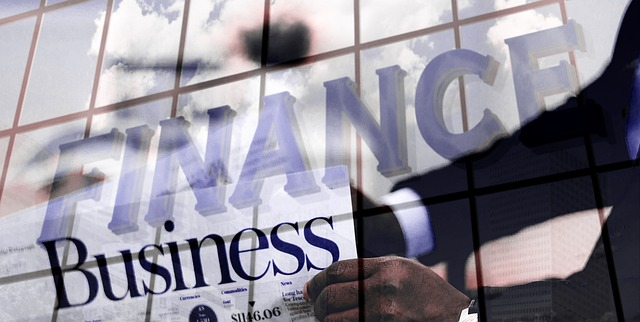

Opening Your First Bank Account: A Simple Guide for Beginners
Published: May 2025 "A bank account is your financial foundation – the first step toward money management and independence." — Financial Expert
If you're opening your first bank account, congratulations! You're taking a big step toward financial responsibility. Whether you're a student, young adult, or just new to banking, this guide will walk you through everything you need to know.
Why Do You Need a Bank Account?
Having a bank account is safer and more convenient than keeping cash under your mattress. Here’s why it matters:
- Safety – Protects your money from theft or loss
- Convenience – Pay bills, receive paychecks, and shop online easily
- Savings Growth – Earn interest on your money (even if small)
- Credit Building – Helps establish financial history
"Money grows on the tree of persistence, but it’s safest in a bank account." — Japanese Proverb
Types of Bank Accounts
1. Checking Account
- Best for: Everyday spending, debit card transactions, bill payments
- Usually has low or no interest
- May have monthly fees (but many banks offer free student accounts)
2. Savings Account
- Best for: Storing emergency funds or saving for goals
- Earns a small amount of interest
- Some banks limit withdrawals per month
"Do not save what is left after spending, but spend what is left after saving." — Warren Buffett
3. Student Account (If Applicable)
- Often fee-free with perks like ATM fee reimbursements
- Designed for teens and college students
How to Open Your First Bank Account
Step 1: Choose the Right Bank
Compare options:
- Traditional Banks (Chase, Bank of America) – Physical branches
- Online Banks (Ally, Chime) – Higher interest rates, no branches
- Credit Unions – Member-owned, often lower fees
Step 2: Gather Required Documents
- Government-issued ID (Driver’s license, passport)
- Social Security Number (SSN) or ITIN
- Proof of address (Utility bill, lease agreement)
- Initial deposit (Some accounts require $25–$100)
Step 3: Apply Online or In-Person
- Online: Fast and easy (great for digital banks)
- In-person: Helpful if you have questions
Step 4: Set Up Online Banking & Mobile App
- Enroll in online banking for 24/7 access
- Download the bank’s app for mobile deposits and alerts
"Banking is no longer somewhere you go, but something you do." — Brett King
What to Look for in a Bank Account
- No (or Low) Monthly Fees – Avoid accounts with high maintenance fees
- Free ATM Access – Check if the bank reimburses ATM fees
- Mobile Banking Features – Deposit checks via phone, budgeting tools
- Overdraft Protection – Prevents declined transactions (but watch fees!)
Common Mistakes to Avoid
- 🚫 Ignoring Fees – Some accounts charge for low balances or too many transactions
- 🚫 Not Monitoring Your Account – Check regularly for fraud or errors
- 🚫 Choosing Convenience Over Value – A nearby bank isn’t always the best
"It’s not how much money you make, but how much you keep." — Robert Kiyosaki
Final Thought
Opening your first bank account is a milestone in financial independence. As Dave Ramsey says:
"You must gain control over your money, or the lack of it will forever control you."
Ready to open your account? Start comparing options today!
Need help choosing a bank? Check out NerdWallet’s recommendations for the best starter accounts.